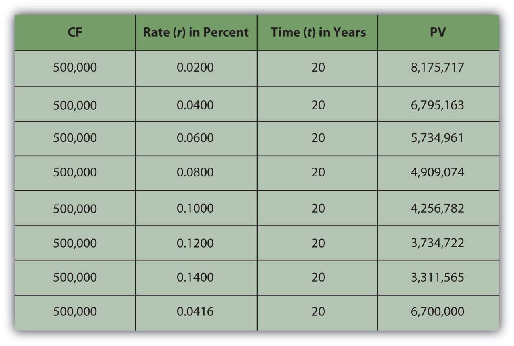
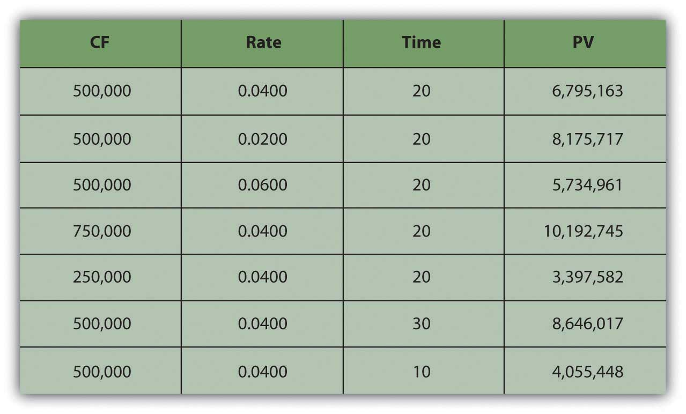
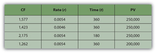
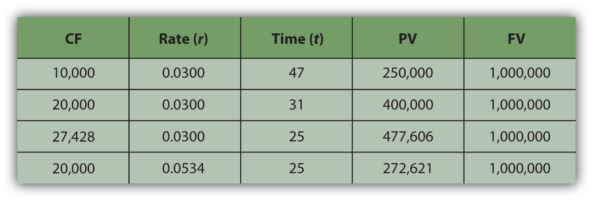

It is quite common in finance to value a series of future cash flows (CF), perhaps a series of withdrawals from a retirement account, interest payments from a bond, or deposits for a savings account. The present value (PV) of the series of cash flows is equal to the sum of the present value of each cash flow, so valuation is straightforward: find the present value of each cash flow and then add them up.
Often, the series of cash flows is such that each cash flow has the same future value. When there are regular payments at regular intervals and each payment is the same amount, that series of cash flows is an annuityA series of cash flows in which equal amounts happen at regular, periodic intervals.. Most consumer loan repayments are annuities, as are, typically, installment purchases, mortgages, retirement investments, savings plans, and retirement plan payouts. Fixed-rate bond interest payments are an annuity, as are stable stock dividends over long periods of time. You could think of your paycheck as an annuity, as are many living expenses, such as groceries and utilities, for which you pay roughly the same amount regularly.
To calculate the present value of an annuity, you need to know
Almost any calculator and the many readily available software applications can do the math for you, but it is important for you to understand the relationships between time, risk, opportunity cost, and value.
If you win the lottery, for example, you are typically offered a choice of payouts for your winnings: a lump sum or an annual payment over twenty years.
The lottery agency would prefer that you took the annual payment because it would not have to give up as much liquidity all at once; it could hold on to its liquidity longer. To make the annual payment more attractive for you—it isn’t, because you would want to have more liquidity sooner—the lump-sum option is discounted to reflect the present value of the payment annuity. The discount rate, which determines that present value, is chosen at the discretion of the lottery agency.
Say you win $10 million. The lottery agency offers you a choice: take $500,000 per year over 20 years or take a one-time lump-sum payout of $6,700,000. You would choose the alternative with the greatest value. The present value of the lump-sum payout is $6,700,000. The value of the annuity is not simply $10 million, or $500,000 × 20, because those $500,000 payments are received over time and time affects liquidity and thus value. So the question is, What is the annuity worth to you?
Your discount rate or opportunity cost will determine the annuity’s value to you, as Figure 4.8 "Lottery Present Value with Different Discount Rates" shows.
Figure 4.8 Lottery Present Value with Different Discount Rates
As expected, the present value of the annuity is less if your discount rate—or opportunity cost or next best choice—is more. The annuity would be worth the same to you as the lump-sum payout if your discount rate were 4.16 percent.
In other words, if your discount rate is about 4 percent or less—if you don’t have more lucrative choices than earning 4 percent with that liquidity—then the annuity is worth more to you than the immediate payout. You can afford to wait for that liquidity and collect it over twenty years because you have no better choice. On the other hand, if your discount rate is higher than 4 percent, or if you feel that your use of that liquidity would earn you more than 4 percent, then you have more lucrative things to do with that money and you want it now: the annuity is worth less to you than the payout.
For an annuity, as when relating one cash flow’s present and future value, the greater the rate at which time affects value, the greater the effect on the present value. When opportunity cost or risk is low, waiting for liquidity doesn’t matter as much as when opportunity costs or risks are higher. When opportunity costs are low, you have nothing better to do with your liquidity, but when opportunity costs are higher, you may sacrifice more by having no liquidity. Liquidity is valuable because it allows you to make choices. After all, if there are no more valuable choices to make, you lose little by giving up liquidity. The higher the rate at which time affects value, the more it costs to wait for liquidity, and the more choices pass you by while you wait for liquidity.
When risk is low, it is not really important to have your liquidity firmly in hand any sooner because you’ll have it sooner or later anyhow. But when risk is high, getting liquidity sooner becomes more important because it lessens the chance of not getting it at all. The higher the rate at which time affects value, the more risk there is in waiting for liquidity and the more chance that you won’t get it at all.
| As r increases | the PV of the annuity decreases |
| As r decreases | the PV of the annuity increases |
You can also look at the relationship of time and cash flow to annuity value. Suppose your payout was more (or less) each year, or suppose your payout happened over more (or fewer) years (Figure 4.9 "Lottery Payout Present Values").
Figure 4.9 Lottery Payout Present Values
As seen in Figure 4.9 "Lottery Payout Present Values", the amount of each payment or cash flow affects the value of the annuity because more cash means more liquidity and greater value.
| As CF increases | the PV of the annuity increases |
| As CF decreases | the PV of the annuity decreases |
Although time increases the distance from liquidity, with an annuity, it also increases the number of payments because payments occur periodically. The more periods in the annuity, the more cash flows and the more liquidity there are, thus increasing the value of the annuity.
| As t increases | the PV of the annuity increases |
| As t decreases | the PV of the annuity decreases |
It is common in financial planning to calculate the FV of a series of cash flows. This calculation is useful when saving for a goal where a specific amount will be required at a specific point in the future (e.g., saving for college, a wedding, or retirement).
It turns out that the relationships between time, risk, opportunity cost, and value are predictable going forward as well. Say you decide to take the $500,000 annual lottery payout for twenty years. If you deposit that payout in a bank account earning 4 percent, how much would you have in twenty years? What if the account earned more interest? Less interest? What if you won more (or less) so the payout was more (or less) each year?
What if you won $15 million and the payout was $500,000 per year for thirty years, how much would you have then? Or if you won $5 million and the payout was only for ten years? Figure 4.10 "Lottery Payout Future Values" shows how future values would change.
Figure 4.10 Lottery Payout Future Values

Going forward, the rate at which time affects value (r) is the rate at which value grows, or the rate at which your value compounds. It is also called the rate of compoundingThe effect of time on value or the rate at which time affects value; used when calculating the equivalent future value of a present amount of liquidity.. The bigger the effect of time on value, the more value you will end up with because more time has affected the value of your money while it was growing as it waited for you. So, looking forward at the future value of an annuity:
| As r increases | the FV of the annuity increases |
| As r decreases | the FV of the annuity decreases |
The amount of each payment or cash flow affects the value of the annuity because more cash means more liquidity and greater value. If you were getting more cash each year and depositing it into your account, you’d end up with more value.
| As CF increases | the FV of the annuity increases |
| As CF decreases | the FV of the annuity decreases |
The more time there is, the more time can affect value. As payments occur periodically, the more cash flows there are, the more liquidity there is. The more periods in the annuity, the more cash flows, and the greater the effect of time, thus increasing the future value of the annuity.
| As t increases | the FV of the annuity increases |
| As t decreases | the FV of the annuity decreases |
There is also a special kind of annuity called a perpetuityAn infinite annuity; a stream of periodic cash flows that continues indefinitely., which is an annuity that goes on forever (i.e., a series of cash flows of equal amounts occurring at regular intervals that never ends). It is hard to imagine a stream of cash flows that never ends, but it is actually not so rare as it sounds. The dividends from a share of corporate stock are a perpetuity, because in theory, a corporation has an infinite life (as a separate legal entity from its shareholders or owners) and because, for many reasons, corporations like to maintain a steady dividend for their shareholders.
The perpetuity represents the maximum value of the annuity, or the value of the annuity with the most cash flows and therefore the most liquidity and therefore the most value.
Once you understand the idea of the time value of money, and of its use for valuing a series of cash flows and of annuities in particular, you can’t believe how you ever got through life without it. These are the fundamental relationships that structure so many financial decisions, most of which involve a series of cash inflows or outflows. Understanding these relationships can be a tool to help you answer some of the most common financial questions about buying and selling liquidity, because loans and investments are so often structured as annuities and certainly take place over time.
Loans are usually designed as annuities, with regular periodic payments that include interest expense and principal repayment. Using these relationships, you can see the effect of a different amount borrowed (PVannuity), interest rate (r), or term of the loan (t) on the periodic payment (CF).
For example, if you get a $250,000 (PV), thirty-year (t), 6.5 percent (r) mortgage, the monthly payment will be $1,577 (CF). If the same mortgage had an interest rate of only 5.5 percent (r), your monthly payment would decrease to $1,423 (CF). If it were a fifteen-year (t) mortgage, still at 6.5 percent (r), the monthly payment would be $2,175 (CF). If you can make a larger down payment and borrow less, say $200,000 (PV), then with a thirty-year (t), 6.5 percent (r) mortgage you monthly payment would be only $1,262 (CF) (Figure 4.11 "Mortgage Calculations").
Figure 4.11 Mortgage Calculations
Note that in Figure 4.11 "Mortgage Calculations", the mortgage rate is the monthly rate, that is, the annual rate divided by twelve (months in the year) or r ÷ 12, and that t is stated as the number of months, or the number of years × 12 (months in the year). That is because the mortgage requires monthly payments, so all the variables must be expressed in units of months. In general, the periodic unit used is defined by the frequency of the cash flows and must agree for all variables. In this example, because you have monthly cash flows, you must calculate using the monthly discount rate (r) and the number of months (t).
Saving to reach a goal—to provide a down payment on a house, or a child’s education, or retirement income—is often accomplished by a plan of regular deposits to an account for that purpose. The savings plan is an annuity, so these relationships can be used to calculate how much would have to be saved each period to reach the goal (CF), or given how much can be saved each period, how long it will take to reach the goal (t), or how a better investment return (r) would affect the periodic savings, or the time needed (t), or the goal (FV).
For example, if you want to have $1,000,000 (FV) in the bank when you retire, and your bank pays 3 percent (r) interest per year, and you can save $10,000 per year (CF) toward retirement, can you afford to retire at age sixty-five? You could if you start saving at age eighteen, because with that annual saving at that rate of return, it will take forty-seven years (t) to have $1,000,000 (FV). If you could save $20,000 per year (CF), it would only take thirty-one years (t) to save $1,000,000 (FV). If you are already forty years old, you could do it if you save $27,428 per year (CF) or if you can earn a return of at least 5.34 percent (r) (Figure 4.12 "Retirement Savings Calculations").
Figure 4.12 Retirement Savings Calculations
As you can see, the relationships between time, risk, opportunity cost, and value are some of the most important relationships you will ever encounter in life, and understanding them is critical to making sound financial decisions.
Modern tools make it much easier to do the math. Calculators, spreadsheets, and software have been developed to be very user friendly and widely available.
Financial calculators are designed for financial calculations and have the equations relating the present and future values, cash flows, the discount rate, and time embedded, for single amounts or for a series of cash flows, so that you can calculate any one of those variables if you know all the others.
Personal finance software packages usually come with a planning calculator, which is nothing more than a formula with these equations embedded, so that you can find any one variable if you know the others. These tools are usually presented as a “mortgage calculator” or a “loan calculator” or a “retirement planner” and are set up to answer common planning questions such as “How much do I have to save every year for retirement?” or “What will my monthly loan payment be?”
Spreadsheets also have the equations already designed and readily accessible, as functions or as macros. There are also stand-alone software applications that may be downloaded to a mobile device, such as a smartphone or Personal Digital Assistant (PDA). They are useful in answering planning questions but lack the ability to store and track your situation in the way that a more complete software package can.
The calculations are discussed here not so that you can perform them, as you have many tools to choose from that can do that more efficiently, but so that you can understand them, and most importantly, so that you can understand the relationships that they describe.
To calculate the present value of an annuity, you need to know
The calculation for the present value of an annuity yields valuable insights.
The calculation for the future value of an annuity yields valuable insights.